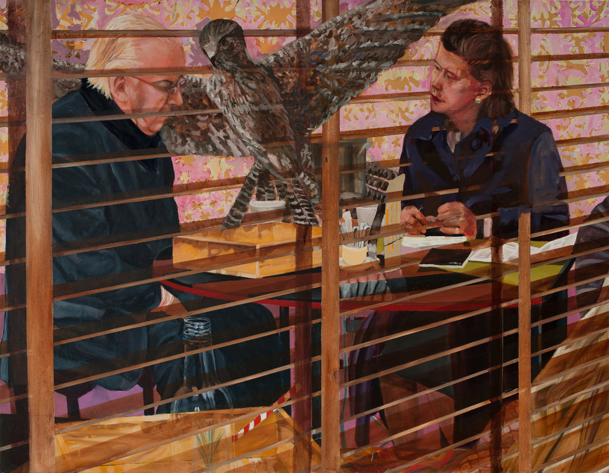
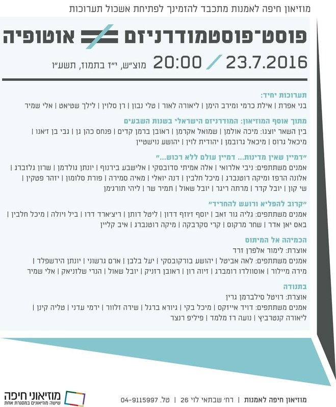
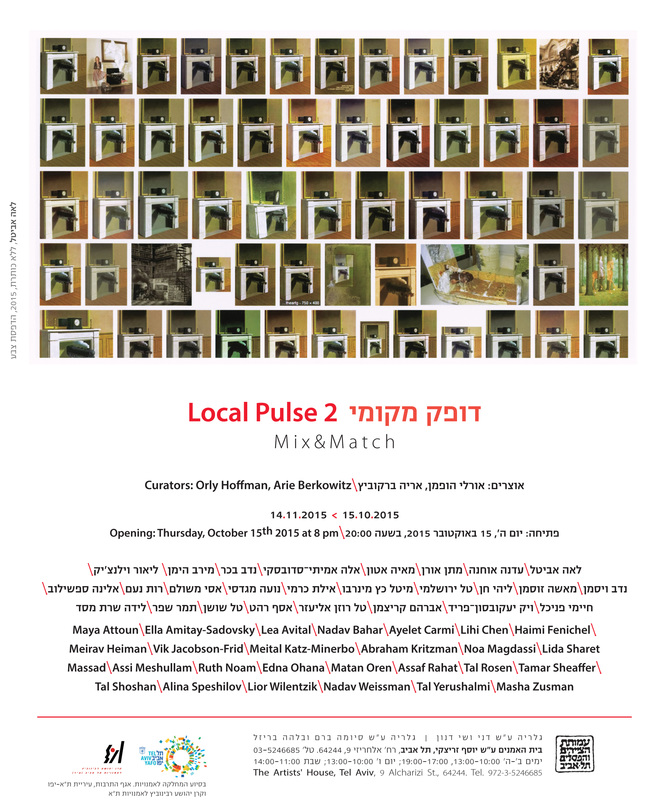
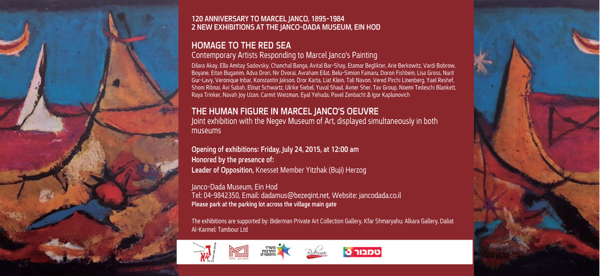

I to eye Exhibition Israel Museum, Jerusalem Curator: Shir Meller-Yamaguchi 27 Jun 2018 – 10 Jun 2019 
The Ann and Ari Rosenblatt Prize for Visual Art 2016 7 MINUTES Solo Show The Artist House in Tel Aviv Curator: Orly Hoffman 15 Sep 2016
Post-Postmodernism ≠ Utopia Group Exhibition Curator: Svetlana Reingold Haifa Museum of Art 23 July 2016 
MIX&MATCH 2 Group Exhibition The Artist House in Tel Aviv Curated by Orly Hoffman and Arie Berkowitz 15 Oct – 14 Nov 2015 
Homage to The Red Sea 120th Anniversary of Marcel Janco (1895–1984) The Janco-Dada Museum, Ein Hod Opening: Friday, July 24, 2015 